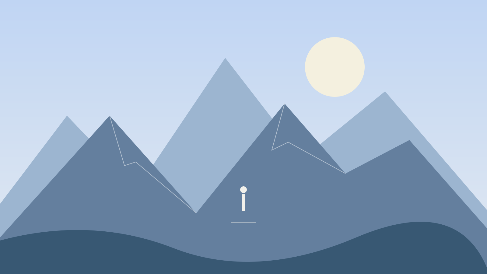

A SMALL EXTENSION FOR YOUR TALL SCREEN.
same video.
new frame.
YouTube.
With a vertical point of view.
Give your portrait monitor the whole picture.
Fill the screen. Find your frame.
Keep watching, your way.
FREE DOWNLOAD · CHROME + DIA · V. 1.1.0
A little shift.
A lot more screen.
Move the sliders. Find the view.
These are the same controls
you’ll use inside YouTube.

FILL SCREEN / CENTERED
Same proportions. A new perspective.
Fill screen crops the sides. Full video keeps every detail.
You can always choose a little of both.
From download
to a different view.
A one-minute setup.
No account. No subscription.
Just you and your screen.
- 01
Make room.
Download the extension ↗ and unzip it somewhere you’ll keep it. Move your browser window to your portrait monitor.
Keep the extracted folder. Your browser loads the extension from there.
- 02
Let it in.
Open in Chrome, or in Dia. Turn on Developer mode, choose Load unpacked, and select the folder containing
manifest.json.Already installed? Replace the extracted files, click Reload in the extensions manager, then refresh YouTube.
- 03
Go vertical.
Open or refresh a regular YouTube video. Click Vertical mode next to the fullscreen control. On narrower players, look for the small portrait-screen icon.
▶⛶ - 04
Find your frame.
Open Adjust framing at the top right. Use Crop to balance the full picture against a filled screen. Use Horizontal framing to move left or right. Your adjustments save automatically.
Press Esc to exit. Toggle with Alt + Shift + V — use Option on Mac. If fullscreen is blocked, use YouTube’s own fullscreen button.
Before you
change your view.
Does it stretch or rotate the video?
Neither. Vertical Mode keeps the video’s original proportions and scales it to fit your display. Filling a portrait screen with a landscape video crops the sides. You choose which part stays in view.
What happens to the rest of the picture?
It’s still there. Use Horizontal framing to look left or right, lower Crop, or choose Full video to see everything with letterboxing. Vertical Mode does not automatically follow people or remove black bars already recorded into a video.
Will my usual YouTube controls work?
Yes. Playback, volume, seeking, captions, and settings stay in YouTube’s native player. The extension adjusts the picture and adds its own framing panel.
Which browsers and videos does it support?
Chrome 109+ and compatible Chromium browsers, including Dia. It targets regular desktop YouTube videos, with support for the standard live and embedded player structure. Shorts and the miniplayer are outside this release’s scope. Configure your monitor’s portrait orientation in your operating system first.
What does it collect?
The extension stores two framing settings on your device: crop and horizontal position. It has no analytics, tracking, accounts, or remote services. Its only requested permission is local storage; its content scripts run on the YouTube domains listed in the manifest.
Why isn’t there an “Add to Chrome” button?
This release is distributed as an unpacked extension on GitHub. Download the ZIP and follow the guide above. It has not been published to the Chrome Web Store.
A WIDE WORLD. A TALL SCREEN.